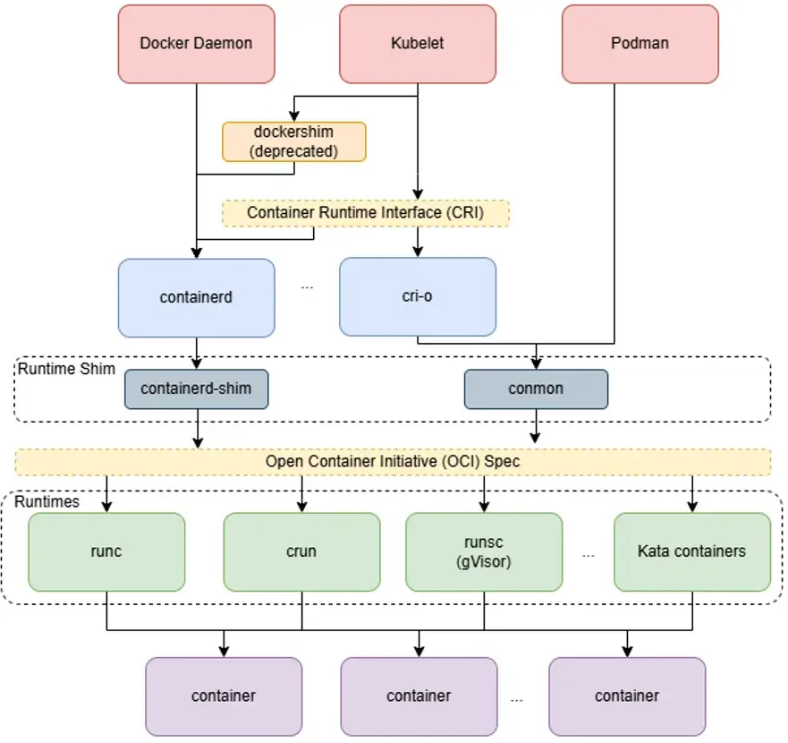
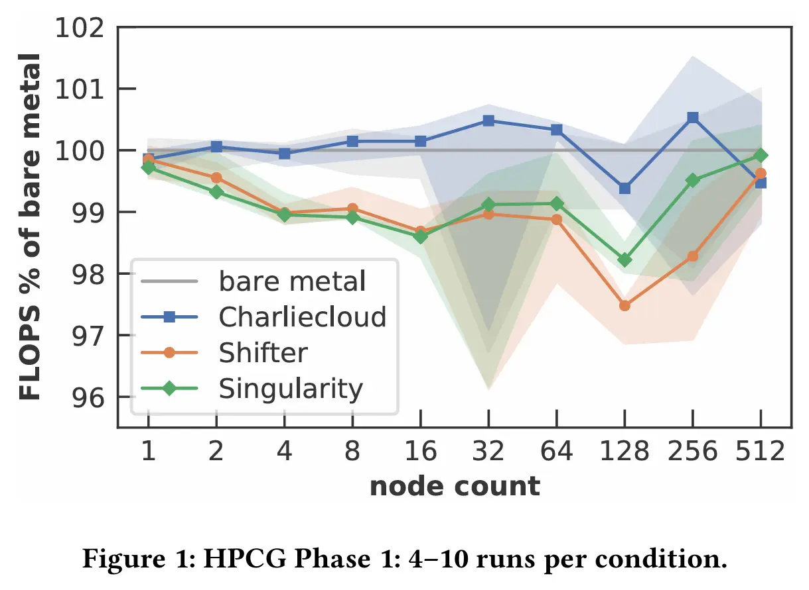
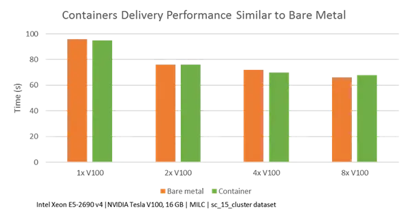

容器¶
Todo
- 容器实践需要更加细致的指导。
- Podman 非特权挂载文件系统问题。
总的来说，容器方案的选择如下：
| 方案 | 描述 |
|---|---|
| Docker | 主流 |
| Podman | Docker 的 rootless 替代品 |
| Singularity | Docker 在 HPC 中的替代品，一般认为 Singularity 运行 MPI 等 HPC 应用性能比 Docker/Podman 好 |
| Apptainer | Singularity 的后继者，就目前使用来说和 Singularity 几乎没啥不同 |
Docker 和 Podman 都遵守 OCI（Open Container Image）格式，而 Singularity 和 Apptainer 能够将 OCI 格式转换为自己的 SIF 格式。
TLDR; develop locally with docker; run docker images on HPC systems using podman/singularity; if performance is a concern, use singularity.
容器技术概述¶
{kind=link}

The Containerization Tech Stack
- 运行时：借助 cgroup 和 namespace 等内核技术实现容器。
- OCI：定义了容器运行时和镜像的标准。
Docker¶
Quote
Docker 官方文档极其详尽且全面，此处不再赘述。检查你自己是否具备以下知识（不需要你记忆，只需要知道有这个东西并会查官方文档即可）并有过相关经验。如果没有，请寻找相关资料学习并实践。
- 什么是镜像和容器？
- Docker 构建
- 会写
Dockerfile
- 会写
- Docker 运行
- 会使用
docker run命令运行容器、使用docker exec命令进入容器 - 会使用
docker ps、docker logs、docker inspect等命令查看容器状态
- 会使用
- Docker Compose
- 会使用
docker compose命令 - 会写
compose.yml文件
- 会使用
作为运维，你还需要了解：
一些常见问题记录如下：
Docker Compose 运行自定义命令
Docker 容器只会执行一条命令，该命令退出后容器也会退出。执行的命令由如下方式决定：
- 如果容器未定义 entrypoint，那么执行 command。
- 如果容器定义了 entrypoint，那么执行 entrypoint，将 command 作为 entrypoint 的参数。
为容器提供 entrypoint 和 command 的方式如下：
| 运行方式 | 定义 entrypoint | 定义 command |
|---|---|---|
docker run |
--entrypoint <entrypoint> 选项 |
镜像名后的参数 |
| Dockerfile | ENTRYPOINT 指令 |
CMD 指令 |
| Compose 文件 | entrypoint: |
command: |
Podman¶
Docker 命令大部分兼容。常用命令助记：
# 拉取
podman search {name}
podman pull docker://{name}:{tag}
podman images
# 运行
podman run --name {container_name} -d -p {host_port}:{container_port} {name}:{tag}
# 查询
podman ps -a
podman inspect {contanier_name}
podman top {container_name/id}
podman logs <container_name/id>
# 保存
sudo podman container checkpoint <container_id>
sudo podman container restore <container_id>
# 删除
podman stop <container_id>
podman rm <container_id>
从 Docker 迁移到 Podman，特别是使用 podman-compose 时，有不少兼容性问题。目前我们所知的有：
- Docker compose 文件中不需要再指定 UID/GID，否则可能造成 Podman 内的文件系统权限问题。
Rootless 容器¶
集群不会对普通用户开放 Root 权限，以维持系统安全和环境稳定。本文档提供一些 rootless 工具的建议，它们的性能一般不会与 root 版本有差异。
Rootless 容器原理¶
内核命名空间¶
性能¶
SC19 Poster 给出了 HPCG 的结果：
{kind=link}

NVIDIA 官方给出了 Singularity 在 GPU 上的表现：
{kind=link}

Umeå University 给出了 Docker 和 Singularity 的比较：
-
Linpack
-
顺序读写
-
随机读写
-
内存
-
网络
{kind=link}
{kind=link}
{kind=link}
{kind=link}
{kind=link}
集群 A100 40G 上测试的结果（2023.02)：
- bare-metal 1.118e+04 Gflops
- docker 1.218e+04 Gflops
- singularity 1.223e+04 Gflops
安全¶
Rootless 容器被广泛认为是安全的，因为它们不需要 root 权限，从而避免了逃逸提权的问题。
在 Arch Wiki 上有一个过时的安全提示，相关的讨论始于 2013 年：
Rootless Podman relies on the unprivileged user namespace usage (
CONFIG_USER_NS_UNPRIVILEGED) which has some serious security implications. Unprivileged user namespace usage (CONFIG_USER_NS_UNPRIVILEGED) is enabled by default in linux, linux-lts and linux-zen, which greatly increases the attack surface for local privilege escalation (see AppArmor's Wiki and FS#36969).
如今，各个发行版都有相应安全措施，可以认为 rootless 容器是安全的。比如，Debian 自 11 开始默认启用 AppArmor。AppArmor 通过默认配置文件限制非特权进程创建的用户命名空间内的任务，并具有较低的权限。如果不存在默认配置文件，AppArmor 将回退到拒绝未受限的非特权进程访问用户命名空间。详见 AppArmor / apparmor。
--privileged — Podman documentation 对当前 rootless 容器的安全性进行了说明：
A privileged container turns off the security features that isolate the container from the host. Dropped Capabilities, limited devices, read-only mount points, Apparmor/SELinux separation, and Seccomp filters are all disabled.
Rootless containers cannot have more privileges than the account that launched them.
专为 HPC 优化的容器：Apptainer/Singularity¶
常用命令助记：
apptainer --debug run docker://alpine
apptainer pull docker://nvcr.io/nvidia/hpc-benchmarks:24.03
# 交互式
apptainer shell --nv ./hpc-benchmarks_24.03.sif
# 不带交互
apptainer run --nv ./hpc-benchmarks_24.03.sif /workspace/hpcg.sh --dat /workspace/hpcg-linux-x86_64/sample-dat
apptainer run --nv ./hpc-benchmarks_24.03.sif nsys profile --trace=cuda,openmp,nvtx,cublas --sample=system-wide /workspace/hpcg.sh --dat ~/hpcg/hpcg-nsys.dat
--nv或--nvccli：CUDA 支持。带上该选项后，在容器中可以使用nvidia-smi看到系统中的 GPU 设备。--bind /source:/target：挂载目录。- Apptainer 自动挂载这些目录：
/home/$USER,/tmp,$PWD。
- Apptainer 自动挂载这些目录：
K8S¶
初次部署 K8S 时，请逐篇阅读 Container Runtimes | Kubernetes，按照流程配置。
下文按照 kubeadm、kubelet 的顺序进行配置。
基础设置¶
开启 IP 转发，关闭 swap：
cat <<EOF | sudo tee /etc/sysctl.d/k8s.conf
net.ipv4.ip_forward = 1
EOF
sudo sysctl --system
sudo swapoff -a
容器运行时：containerd¶
Quote
K8S 需要一个容器运行时，默认使用 containerd。如果已安装 Docker，则 containerd 已安装。
# disabled_plugins = ["cri"]
# K8S
[plugins."io.containerd.grpc.v1.cri"]
sandbox_image = "registry.k8s.io/pause:3.10"
[plugins."io.containerd.grpc.v1.cri".containerd.runtimes.runc]
[plugins."io.containerd.grpc.v1.cri".containerd.runtimes.runc.options]
SystemdCgroup = true
- containerd 和 Docker 类似，由 daemon 拉取镜像，因此需要修改 systemd unit 文件配置代理。
sock rpc error
执行 kubeadm init 时，如果遇到
failed to create new CRI runtime service: validate service connection: validate CRI v1 runtime API for endpoint "unix:///var/run/containerd/containerd.sock": rpc error: code = Unimplemented desc = unknown service runtime.v1.RuntimeService[preflight] If you know what you are doing, you can make a check non-fatal with `--ignore-preflight-errors=...`
这类错误，一般是 containerd 没有配置好。按照 Container Runtimes | Kubernetes 配置，直到 cri 插件正常：